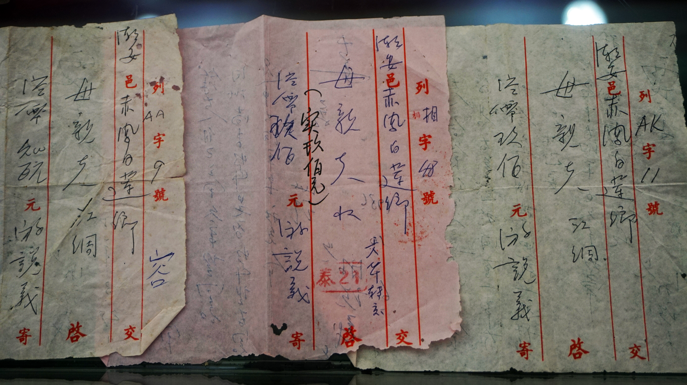

素材风险
待评估待填写素材信息研究工作台 / 总览
侨批智护
侨批 AIGC 合规研究工作台
当前研究项目侨批数字叙事短片试制
研究进行中授权匹配
未匹配待选择使用场景跨境传播
未分析待选择目标地区发布检查
未检查待完成检查清单研究路径
从档案入库到合规传播
01
档案与样本采集文化记忆档案筛选、叙事提取与 AIGC 样本构建。
02
链路与权属厘清创作边界拆解生成链路，核验素材来源与使用权限。
03
跨境与传播对接目标规则比对法域、平台要求与内容披露义务。
04
合规与归档沉淀研究成果整合授权决策、发布核验与合规档案。
项目记录
0研究样本
0审核素材
0识别图片
文化档案侨批

潮州博物馆藏侨批影像
摄影：三猎 / CC BY-SA 4.001 项目建档
建立 AIGC 项目并生成独立编号
项目编号QP-20260823-001
02 样本集构建
从静态档案到 AIGC 叙事样本
点击生成后形成样本编号、生成提示词、风险标记和研究观察项。
03 素材权属审核
建立侨批素材档案卡
风险分级中风险
建议补充授权材料，并在发布前进行人工复核。
| 素材 | 来源 | 状态 | 处理建议 |
|---|
04 生成链路分析
拆解数据输入、模型处理和结果输出
输入档案素材
处理模型生成
输出传播作品
05 授权与利益分配
按使用场景列出所需权限
所需权限
缺失提示
利益分配待生成
根据主体和使用方式输出署名、备案、收益和退出机制。
06 跨境规则对接
比对目标法域、平台责任和信息披露义务
07 AIGC识别记录
记录模型、提示词、生成结果和图片识别
尚未保存
图片上传与AIGC识别
识别生成器、提示词、参数和发布风险
尚未上传图片
上传后自动扫描 EXIF、XMP、PNG 文本块、生成参数和基础视觉特征。
08 交互式授权决策树
核对档案使用条件
等待决策
决策树将输出放行、补充授权、人工复核或禁止发布建议。
法律提示词助手
生成给合规智能体或大模型的审查提示词
09 发布前检查
核验授权、脱敏、标识和海外平台条款
等待检查
完成必要项后，可生成合规档案包。
10 合规档案包